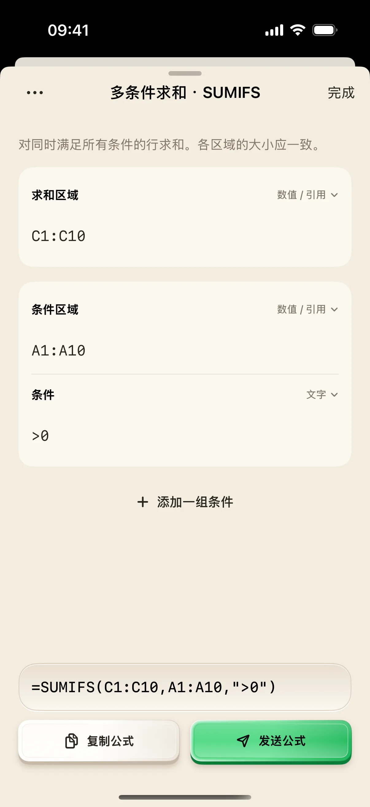

先算出 0.1＋0.2，再把三行练习数据写成一条 SUMIFS 公式。你会用到本地计算器、公式参数面板和复制功能，最后在 Mac 的表格软件中核对计算结果。
开始前准备
- 在 iPhone / iPad 安装奶猫妙控 1.2.0 即可使用本地计算器和复制公式。需要发送到 Mac 时，再安装同版本配套端、完成配对并允许辅助功能权限。
- 本地计算与复制可以不连接 Mac。要发送到表格，先准备空白工作表，在 A1:A3 输入 1、0、2，在 C1:C3 输入 10、20、30，其他相关行留空。
1. 在“录入”桌面切到计算器
在 App 底部点“布局”，在列表中找到“财务”。布局较多时用搜索框搜索名称；有多个桌面的方案先点右侧箭头展开，再点桌面名称；搜索具体桌面名称也能找到它。先进入“录入”桌面，点底部模式条的“计算器”。按 AC 清除旧值，依次输入 0、.、1、＋、0、.、2、＝。
小屏结果应为 0.3。点“复制”，看到“已复制”后，结果进入手机剪贴板。数字键盘与计算器保留各自状态，切模式不会把这次计算直接输入 Mac。
2. 认识发送结果与回车的区别
若已连接 Mac，先在练习工作表选一个空白单元格，再点“发送”。核对输入位置后，按表格软件的回车完成录入。
“发送”只发送数字文本，不会自动回车，也不会读取单元格。手机小屏显示的是本地计算结果，不能用它确认工作簿、单元格或公式是否已经保存。
3. 进入“统计汇总”，长按 SUMIFS
点“布局”，在财务方案下点“统计汇总”桌面。找到 SUMIFS，按住约一秒再松手，打开参数面板。
短按和长按行为不同：短按直接输入 =SUMIFS( 前缀；长按才进入下面的填写流程。若你只看见前缀进入 Mac，而手机没有面板，先在 Mac 撤销这次输入，再重新长按。
4. 填入三个参数，先看预览
在参数面板中依次填入：求和范围 C1:C10、条件范围 A1:A10、条件 >0。第三项保留为文本条件；只填 >0，不要再手动包一层双引号。
点“收起键盘”，核对预览是否为 =SUMIFS(C1:C10,A1:A10,">0")。范围写反、漏填条件或重复加引号，都会改变含义。面板会为文本条件加上所需的引号。

5. 复制公式，再在表格中验证
点参数面板底部“复制”，确认“已复制”。如果希望直接输入 Mac，先选中 D1 这样的空白单元格，再点“发送”，最后在 Mac 按回车。
对准备好的三行练习数据，条件 A 列大于 0 会选中第 1、3 行，C 列对应值相加为 40。这个 40 是练习数据的预期数学结果；请用你的表格实际算一次，确认公式被识别而不是被当成普通文本。
6. 增加条件前，先确认范围对应
需要多条件时点面板中的添加条件入口，填写新的条件范围和条件。新增一组后，必填项补齐前不能复制或发送。所有范围应覆盖对应行，避免一个范围到第十行、另一个只到第三行。
如果表格软件要求分号分隔参数，在面板导航菜单切换分隔符后，再检查预览。练习结束用关闭按钮返回桌面；下一次只想快速输入函数前缀时，短按公式键即可。
操作不符合预期时
为什么 2＋3×4 得到 20？
本地计算器按连续运算处理：先完成 2＋3，再乘以 4。它不是带运算优先级的表达式编辑器；复杂计算请在表格公式中完成。
复制或发送按钮为什么灰着？
公式参数未填齐时，两者不可用；未连接 Mac 时发送不可用。本地计算器与复制仍可以使用。
Excel、Numbers 都能用全部公式吗？
生成器输出公式文本，不替表格软件检查函数版本与语法支持。先用本文的简单 SUMIFS 练习验证，再使用查找、动态数组等受版本影响的函数。
本文按奶猫妙控 1.2.0 的界面与操作编写，更新于 2026 年 9 月 10 日。查看更新日志 · 连接与权限帮助。